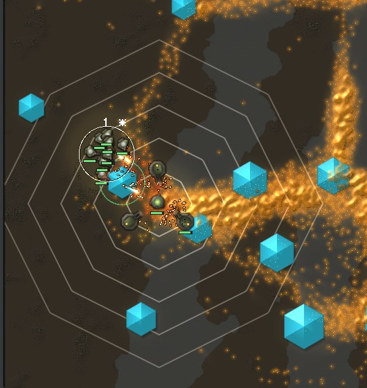

<title>Raised Walls</title>
<meta name="claude:viewport-fit-sides" content="cover">
<link rel="stylesheet" href="https://fonts.googleapis.com/css2?family=Bricolage+Grotesque:opsz,wght@12..96,600;12..96,750&family=Source+Sans+3:wght@400;600&family=JetBrains+Mono:wght@400&display=swap">
<style>
/* Layout: one reading column; each fix is a pair, before on the left and after on the right (stacked on a phone), counts under each */
:root{
  --bg:#f3f2ec; --panel:#e8e6dc; --fg:#1d211c; --muted:#5b6157;
  --accent:#b0702a; --soft:#f1e3cf; --line:#cfccbf;
  --display:"Bricolage Grotesque", "Segoe UI", system-ui, sans-serif;
  --body:"Source Sans 3", "Segoe UI", system-ui, sans-serif;
  --mono:"JetBrains Mono", ui-monospace, Consolas, monospace;
}
@media (prefers-color-scheme: dark){:root:not([data-theme="light"]){
  --bg:#16140f; --panel:#221f18; --fg:#ebe7dd; --muted:#a39d8e;
  --accent:#e0a35a; --soft:#33291b; --line:#3a3428; color-scheme:dark}}
:root[data-theme="dark"]{
  --bg:#16140f; --panel:#221f18; --fg:#ebe7dd; --muted:#a39d8e;
  --accent:#e0a35a; --soft:#33291b; --line:#3a3428; color-scheme:dark}
body{background:var(--bg);color:var(--fg);font:17px/1.55 var(--body);margin:0;
  padding-left:max(16px,env(safe-area-inset-left,0px));padding-right:max(16px,env(safe-area-inset-right,0px));padding-block:28px 64px}
main{max-width:1180px;margin:0 auto;display:flex;flex-direction:column;gap:30px}
h1,h2,h3{font-family:var(--display);text-wrap:balance;line-height:1.15;margin:0}
h1{font-size:2.3rem;font-weight:750}
h2{font-size:1.45rem;font-weight:750;border-top:2px solid var(--accent);padding-top:14px}
h3{font-size:1.08rem;font-weight:600}
p{margin:0}
section{display:flex;flex-direction:column;gap:14px}
.lede{color:var(--muted);font-size:1.02rem;max-width:760px}
.eyebrow{font:12px/1 var(--mono);letter-spacing:.08em;text-transform:uppercase;color:var(--accent)}
.prose{max-width:760px}
code{font:0.86em var(--mono);background:var(--panel);padding:1px 4px;border-radius:3px}
.grid{display:grid;grid-template-columns:repeat(2,minmax(0,1fr));gap:16px}
@media (max-width:720px){.grid{grid-template-columns:minmax(0,1fr)}}
figure{margin:0;display:flex;flex-direction:column;gap:6px;min-width:0}
figure video,figure img{width:100%;height:auto;display:block;border-radius:6px;border:1px solid var(--line);background:#000}
figcaption{display:flex;align-items:baseline;gap:10px;flex-wrap:wrap;font-size:.92rem;color:var(--muted)}
.side{font:750 1.1rem/1 var(--display);color:var(--fg);min-width:4.6em}
.counts{font:13px/1.4 var(--mono);color:var(--fg);font-variant-numeric:tabular-nums}
.note{background:var(--soft);border-radius:8px;padding:16px 18px;max-width:760px;display:flex;flex-direction:column;gap:8px}
ul{margin:0;padding-left:1.2em;display:flex;flex-direction:column;gap:8px;max-width:760px}
footer{font-size:.85rem;color:var(--muted);max-width:760px}
</style>
<main>
<header style="display:flex;flex-direction:column;gap:10px">
  <span class="eyebrow">Larder World · Look A and B · 2026-11-18</span>
  <h1>The slime's walls stand up, and the Lure's rings stop clean</h1>
  <p class="lede">On planet 3 the slime now walls every crystal it holds. Drawn flat, those walls read as a rust stain on the slime. They now stand above it, lit on one side and shaded on the other. Separately, zoomed out, the Lure's rings ended in a dotted ring at the edge of its pull; that ring is gone. Each pair below is one game drawn two ways.</p>
</header>

<section>
  <h2>The home ring setting, zoom 12</h2>
  <p class="prose">Planet 3, run seed 1, nobody shooting, 12 to 18 s at the game's own pace. The ring with its four gates sets round the slime's home crystal.</p>
  <div class="grid">
    <figure><video src="walls-z12-before.mp4" poster="walls-z12-before.jpg" autoplay muted loop playsinline aria-label="Before: the ring is a flat rust band on the slime"></video><figcaption><span class="side">Flat</span><span class="counts">as the fort's own page shows it</span></figcaption></figure>
    <figure><video src="walls-z12-after.mp4" poster="walls-z12-after.jpg" autoplay muted loop playsinline aria-label="After: the ring stands up with a lit edge and a shaded edge"></video><figcaption><span class="side">Raised</span><span class="counts">4.9% of the picture changed (5.2% at most)</span></figcaption></figure>
  </div>
</section>

<section>
  <h2>The same, zoom 6</h2>
  <div class="grid">
    <figure><video src="walls-z6-before.mp4" poster="walls-z6-before.jpg" autoplay muted loop playsinline aria-label="Before, zoom 6: the home crystal's ring flat"></video><figcaption><span class="side">Flat</span></figcaption></figure>
    <figure><video src="walls-z6-after.mp4" poster="walls-z6-after.jpg" autoplay muted loop playsinline aria-label="After, zoom 6: the home crystal's ring raised"></video><figcaption><span class="side">Raised</span><span class="counts">1.7% of the picture changed (1.8% at most)</span></figcaption></figure>
  </div>
</section>

<section>
  <h2>The Lure's rings, zoomed out on planet 2</h2>
  <p class="prose">A Lure built at 30 s with three turrets round it, the whole left half of the planet at 40 s. The pull reaches 120 cells and a ring is drawn every 20, so the last ring fell exactly on the pull's ragged edge.</p>
  <div class="grid">
    <figure><figcaption><span class="side">Before</span><span class="counts">a dotted ring at the edge</span></figcaption></figure>
    <figure><figcaption><span class="side">After</span><span class="counts">0.25% of the picture changed</span></figcaption></figure>
  </div>
</section>

<section>
  <h2>What to look for</h2>
  <ul>
    <li><strong>The walls' upper left edges catch the light and the lower right ones fall into shade,</strong> as the slime's own veins do. A soldier cannot cross them, and now they look like it.</li>
    <li><strong>The colour is the amber you already know.</strong> Only the height changed.</li>
    <li><strong>The rings still stop where the pull stops,</strong> one ring inside it.</li>
  </ul>
  <div class="note">
    <h3>Still to do</h3>
    <p>The rings are eight-sided on open ground, because the pull itself is measured that way. The Enemy lane is making the pull round, and the Lure gets its own clips in play then. Close up, the walls' tops still have the slime's soft mottling.</p>
  </div>
</section>

<footer>Filmed on the software renderer with the Trunk's fort in the build. Changed is the share of the picture that differs between the two drawings of the same frame. Source and numbers: <code>Reports/raised-walls-2026-11-18/</code> in the repo.</footer>
</main>
